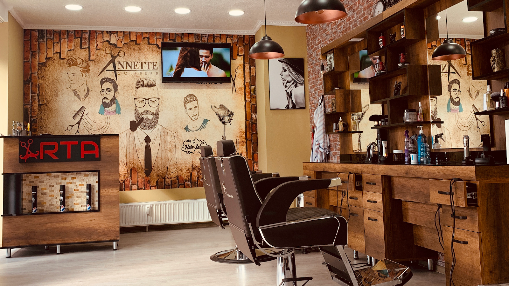
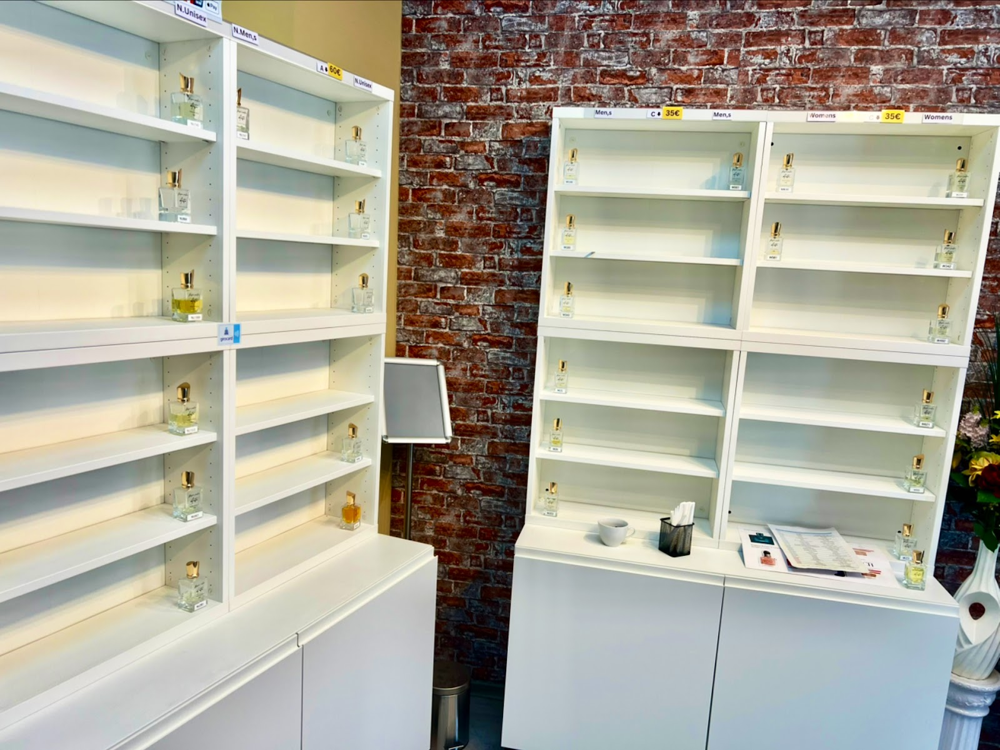

Friseur Arta · Wilhelmstraße 66, Hamm
0
Google-Bewertungen · 4,8 von 5 Sternen
Der Laden, über den Hamm spricht.
oder einfach scrollen
Der Besuch · Kapitel 1 — Der Salon
Vintage vorne. Präzision am Stuhl.
Ziegelwand, Holz und Kupferlicht: ein Barbershop mit Charakter, mitten in Hamm.
Die Karte für Herren.
Vom Maschinenschnitt bis zur klassischen Rasur mit heißen Tüchern.
Beispielpreise aus der Vorbereitung: Sie werden vor dem Livegang gemeinsam mit dem Salon final eingetragen.
Der Besuch · Kapitel 2 — Das Handwerk
Der Schnitt, gezeichnet.
Wie auf der Tapete im Laden: vier Schritte, mit der Linie erklärt, am Stuhl gemacht.
Vier Linien bis zum fertigen Look.
- Die KonturKopfform lesen, Ansatz setzen: Jeder gute Schnitt beginnt mit der Linie.
- Der FadeDie Maschine baut den Übergang auf, von der Haut aufwärts.
- Das DeckhaarSchere und Kamm geben Struktur und Richtung.
- Der BartKontur und Übergang, bis Schnitt und Bart eine Linie sind.
Bewusst gezeichnet statt fotografiert: Diese Vorschau kommt ohne Personen-Fotos aus.
Der Besuch · Kapitel 3 — Die Duft-Bar
Nach dem Schnitt: der Duft.
Was kaum ein Salon hat: eine eigene Parfüm-Bar. Zum Schluss noch einen Duft mitnehmen, ausgesucht am Regal.
- Herren-, Damen- und Unisex-Düfte
- Ab 35 €, ausgewählte Linien 60 €
- Testen direkt im Salon

Was die 274 sagen
„Sehr empfehlenswerter Friseursalon in Hamm mit hoher Kundenzufriedenheit. Besonders positiv fallen die professionelle Beratung, das angenehme Ambiente und das gute Preis-Leistungs-Verhältnis auf."
„Sie verdienen mehr als 5 Sterne für ihre Priorisierung der Kundenzufriedenheit. Alles war ausgezeichnet: der Haarschnitt und der erstklassige Service."
„Beste Frisur in NRW, Leute. Besucht sie einmal und überzeugt euch selbst: 5 Sterne für verdiente Arbeit."
Einfach anrufen oder vorbeikommen.
Kein kompliziertes Buchungssystem: Telefon, WhatsApp oder direkt an der Wilhelmstraße 66 reinschauen.